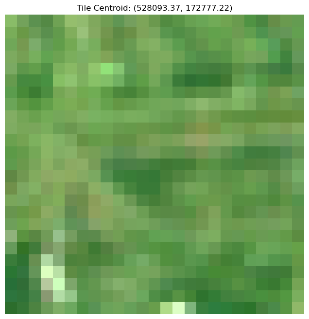

import sys
sys.path.insert(1, '/bask/homes/f/fedu7800/vjgo8416-demoland/spatial_signatures/eo/ai_pipeline')
import pipeline
from pipeline import GeoTileDataset, read_data, plot_examples
from torch.utils.data import Dataset, DataLoader
import matplotlib.pyplot as plt
import geopandas as gpd
%matplotlib inlinegeojson_path = '/bask/homes/f/fedu7800/vjgo8416-demoland/spatial_signatures/london_25_25_grid_clipped.geojson'
vrt_file = '/bask/homes/f/fedu7800/vjgo8416-demoland/satellite_demoland/data/mosaic_cube/vrt_allbands/2017_combined.vrt'dataset, dataloader = read_data(geojson_path, vrt_file)plot_examples(dataset, num_examples=3)

# Run the pipeline
pipeline.spatial_sig_prediction(
geo_path= "/bask/homes/f/fedu7800/vjgo8416-demoland/spatial_signatures/london_25_25_grid_clipped.geojson",
vrt_file= "/bask/homes/f/fedu7800/vjgo8416-demoland/satellite_demoland/data/mosaic_cube/vrt_allbands/2017_combined.vrt",
xgb_weights = "/bask/homes/f/fedu7800/vjgo8416-demoland/spatial_signatures/predictions/xgb_model_25_latlonh6_jan25_weighted.bin",
model_weights = "/bask/homes/f/fedu7800/vjgo8416-demoland/satellite_demoland/models/satlas/weights/satlas-model-v1-lowres.pth",
output_path= "/bask/homes/f/fedu7800/vjgo8416-demoland/satellite_demoland/data/test.parquet"
)/bask/homes/f/fedu7800/vjgo8416-demoland/spatial_signatures/eo/ai_pipeline/pipeline.py:122: FutureWarning: You are using `torch.load` with `weights_only=False` (the current default value), which uses the default pickle module implicitly. It is possible to construct malicious pickle data which will execute arbitrary code during unpickling (See https://github.com/pytorch/pytorch/blob/main/SECURITY.md#untrusted-models for more details). In a future release, the default value for `weights_only` will be flipped to `True`. This limits the functions that could be executed during unpickling. Arbitrary objects will no longer be allowed to be loaded via this mode unless they are explicitly allowlisted by the user via `torch.serialization.add_safe_globals`. We recommend you start setting `weights_only=True` for any use case where you don't have full control of the loaded file. Please open an issue on GitHub for any issues related to this experimental feature.
full_state_dict = torch.load(model_weights_path, map_location=device)test = gpd.read_parquet('/bask/homes/f/fedu7800/vjgo8416-demoland/satellite_demoland/data//test.parquet')class_labels = {
'Accessible suburbia': 0,
'Connected residential neighbourhoods': 1,
'Countryside agriculture': 2,
'Dense residential neighbourhoods': 3,
'Dense urban neighbourhoods': 4,
'Disconnected suburbia': 5,
'Gridded residential quarters': 6,
'Open sprawl': 7,
'Urban buffer': 8,
'Urbanity': 9,
'Warehouse/Park land': 10,
'Wild countryside': 11
}test['class'] = test['prediction'].map({v: k for k, v in class_labels.items()})test.explore(column='class', cmap='Accent')Make this Notebook Trusted to load map: File -> Trust Notebook